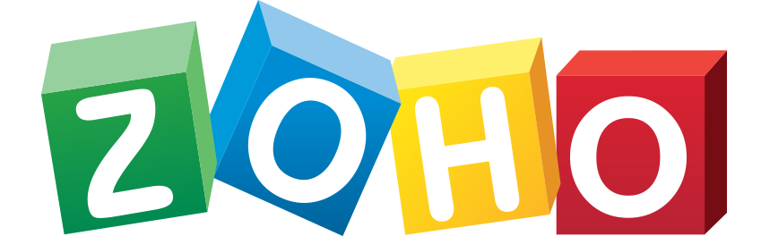

Hi,
I am Akhilesh
I am Akhilesh
Profile
MS In Software Engineering (GPA - 4/4, August 2019- May 2021)
Cognitive Information Processing Systems Lab – Research Assistant:
Bots Propaganda Detection - Data extraction, linking and pattern discovery
- Scrapped bot suspected twitter data. Performed text cleaning, classification and clustering of tweet by topics.
- Generated reports using d3.js and Node.js.
- Implemented Density Based clustering (DBSCAN) and minhash algorithms to cluster tweets for topic detection.
- Wrote a tool using Coornet to detect and report coordinated link sharing done by suspected bots in Facebook.
Large Scale Twitter data management
- Implemented data sharding to store over 1 billion tweets on PostgreSQL and an interface to read and write data.
- Improved the time to fetch a week’s worth of twitter data from 120 seconds to 10 seconds.
- Developed a datastructure using priority queue and map to store highly active tweets and wrote APIs to expose this data.
Projects:
Job Application Tracker
- Developed a web app with Kanban boards to keep track of my job applications as an alternative to paid applications.
- Implemented Job description-based keywords suggestion for resume.
Sunhacks Hackathon, SimplyQ - Winner of Best IoT hack
- Built a notification based virtual queue system where users within the range of a beacon device can reserve a virtual spot
Designed a new Imperative programming language “Trace” and its Interpreter
- Developed an Interpreter for trace, to support primitive data types and their operations and control statements.
Semantic Analysis on Location-based social networking data
- Built an ontology to structure scrapped social media data and a system to profile users based on their sports interest.

Full stack Engineer (June 2017- June 2019)
Full stack Engineer (June 2017- June 2019)
Distributed file server [Lead Developer]
- Designed, Developed and built a distributed file system in Java to store and transfer large files in parallel and efficiently to its respective servers across data centers.
- Enabled file chunk size and parallel transfers to be configured automatically in runtime for maximum transfer speed.
- Achieved multi master replication for fault tolerance and flexible server provisioning for vertical scalability.
Zoho Cloud Platform - Cloud Infrastructure Management
- Wrote RESTful APIs for adding/updating SPF and DMARC records on internal and external DNS servers, thereby automating the management of these DNS records.
- Improved the performance of data replication by reducing memory usage and Garbage Collector processing time, by 5%.
- Developed workflows in Load balancing, Continuous Deployment, DNS Management and User Management.
MQueue – Apache Kafka as a microservice for Internal Teams
- Implemented Kafka/Zookeeper servers’ monitoring by analyzing its internal metrics, exposed via JMX.
- Developed Kafka/Zookeeper self-healing which reduced server downtime by ~3000%.
PDFGen – Zoho’s internal PDF Generator
- Created a blocking queue to handle a large number of heavy requests by analyzing CPU, IO and Memory usage.
- Optimized the software to handle three times more requests.
Live Connections - Software Engineer - Internship (June 2017- June 2019)
Live Connections End-End Recruitment Application
- Migrated their Desktop application to Web.
- Interacted with clients and developed features as required.
Anna University - B.E. In Computer Science (GPA - 7.4/10, August 2013- May 2027)
Publications
- Remote Controlled Human Navigational Assistance for The Blind [Link]: Presented the paper in Mediterranean Symposium on Smart City Applications (In Morocco) and published it in ACM Digital library.
- Autonomous Walking Stick for The Blind Using Echolocation and Image Processing [Link]: Presented the paper in 2nd International Conference on Contemporary Computing (In India) and published it in IEEE Digital Xplore.
Projects
- Remote Controlled Human Navigational Assistance for the Blind - Best final year project award.
- A Web application for Professors to add class attendance. The System generated various attendance reports and emailed it to the administration office.
- A Parser to read student's exam scores from a PDF file and update the Performance Monitoring software.